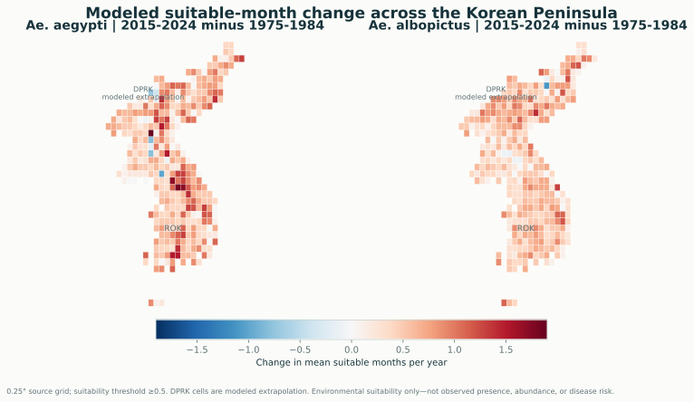
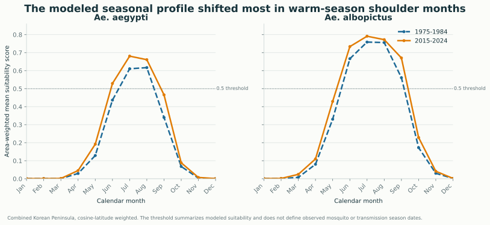
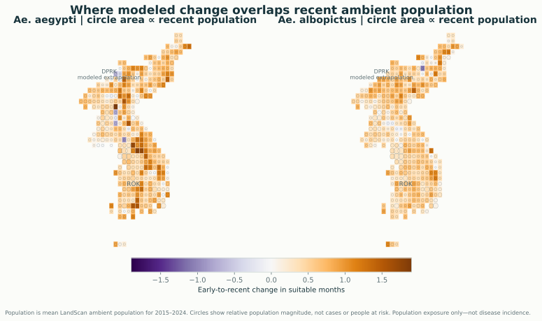
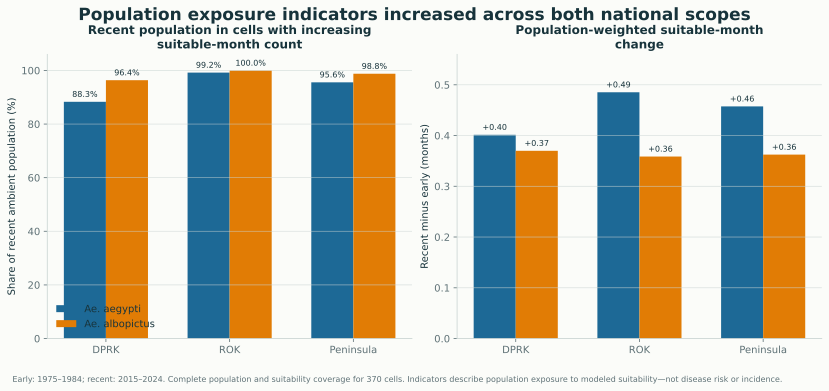
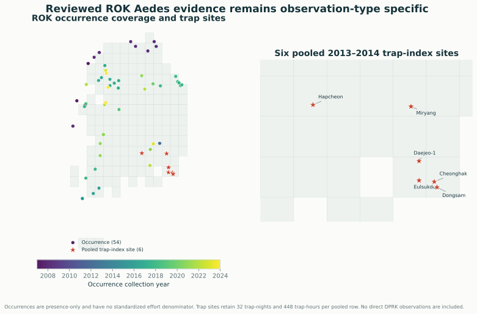
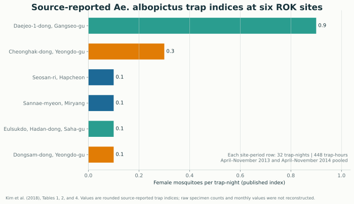

Surveillance timing
Seasonal-profile products identify months where modeled change is strongest, helping investigators formulate testable monitoring schedules rather than inferring exact vector-season dates.
1975–2024 · 370 public grid cells · audited static evidence
A reproducible regional analysis connecting modeled seasonal suitability, ambient population exposure, and source-reviewed ROK observations—without presenting any of them as disease risk.
Between 1975–1984 and 2015–2024, the peninsula-wide area-weighted mean increased by 0.57 months for Ae. aegypti and 0.50 months for Ae. albopictus. South Korea’s corresponding changes were +0.65 and +0.51 months.

The expansion is visible in both the spatial pattern and the peninsula-wide seasonal profile. Recent-period means rise most clearly around May–June and September, indicating change in the modeled shoulders of the warm season.
The result can support review of regional surveillance timing and where independent field validation would be most informative. It does not establish mosquito establishment, biting activity, or a longer disease-transmission season.

The reviewed LandScan input covers every one of the 370 cells for 1975–2024. The independent audit reports 100% cell-period coverage, finite weighted metrics, bounded shares, reconciled totals, and recorded checksums.

Across the peninsula, 95.6% of recent ambient population was in cells with increasing Ae. aegypti suitable-month count and 98.8% was in cells with increasing Ae. albopictus suitable-month count. Population-weighted changes were +0.46 and +0.36 months, respectively.
The overlap product makes regional adaptation and surveillance-planning questions more concrete by showing where modeled change and ambient population coincide. It cannot quantify disease burden, individual exposure, or health benefit.

The evidence package contains 54 presence-only occurrence records from 2007–2024 and six effort-aware Ae. albopictus trap-index rows. The latter are site-level indices pooled across the April–November 2013 and 2014 seasonal windows.

Each trap row represents 32 trap-nights and 448 trap-hours. Across six sites, the imported effort totals 192 trap-nights and 2,688 trap-hours. The value is the published female trap index, not a reconstructed specimen count.
These ROK records do not validate modeled DPRK suitability. Opportunistic occurrence records also cannot be treated as abundance or non-detection data. Spatial and temporal holdouts remain necessary before model-performance claims.

The project’s practical contribution is an auditable evidence package: bounded questions, reproducible products, explicit effort, complete population alignment, and clear gaps that future data collection can close.
Seasonal-profile products identify months where modeled change is strongest, helping investigators formulate testable monitoring schedules rather than inferring exact vector-season dates.
Population-overlap products identify broad cells where independent observation and adaptation planning may have greater public relevance, while preserving the 0.25° spatial limit.
The site makes absence of direct DPRK validation and effort-aware longitudinal data impossible to overlook, turning limitations into a concrete research agenda.
Figure and download checksums are recorded in the publication manifest. The website is generated from committed, reviewed products and can be rebuilt from the repository.
370 cells, complete target-period coverage, reconciled summaries, and SHA-256 provenance.
60 total records across separate occurrence and pooled trap-index observation types.
The source release supplies no per-cell uncertainty layer; displayed spread is descriptive, not confidence.